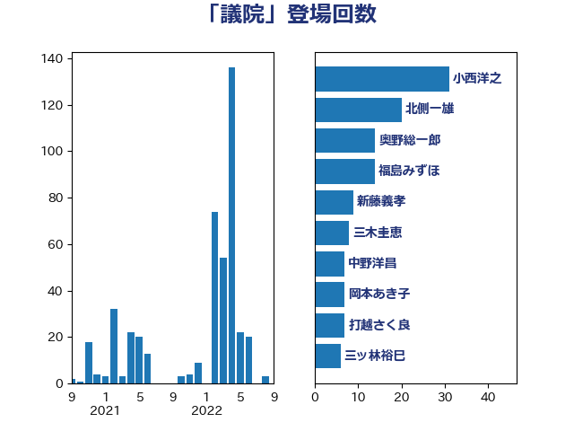

単語「議院」

| 小西洋之 | 立憲民主党 | 31 回 |
| 北側一雄 | 公明党 | 20 回 |
| 奥野総一郎 | 立憲民主党 | 14 回 |
| 福島みずほ | 社会民主党 | 14 回 |
| 新藤義孝 | 自由民主党 | 9 回 |
| 三木圭恵 | 日本維新の会 | 8 回 |
| 中野洋昌 | 公明党 | 7 回 |
| 岡本あき子 | 立憲民主党 | 7 回 |
| 打越さく良 | 立憲民主党 | 7 回 |
| 三ッ林裕巳 | 自由民主党 | 6 回 |
| 古賀篤 | 自由民主党 | 6 回 |
| 山本博司 | 公明党 | 6 回 |
| 道下大樹 | 立憲民主党 | 6 回 |
| 塩川鉄也 | 日本共産党 | 5 回 |
| 山東昭子 | 自由民主党 | 5 回 |
| 山添拓 | 日本共産党 | 5 回 |
| 菅義偉 | 自由民主党 | 5 回 |
| 吉田はるみ | 立憲民主党 | 4 回 |
| 岡田直樹 | 自由民主党 | 4 回 |
| 玉木雄一郎 | 国民民主党 | 4 回 |
| 田畑裕明 | 自由民主党 | 4 回 |
| 西田昌司 | 自由民主党 | 4 回 |
| 黄川田仁志 | 自由民主党 | 4 回 |
| 古川俊治 | 自由民主党 | 3 回 |
| 堀井巌 | 自由民主党 | 3 回 |
| 大野敬太郎 | 自由民主党 | 3 回 |
| 新谷正義 | 自由民主党 | 3 回 |
| 木原誠二 | 自由民主党 | 3 回 |
| 武田良太 | 自由民主党 | 3 回 |
| 西岡秀子 | 国民民主党 | 3 回 |
| 赤嶺政賢 | 日本共産党 | 3 回 |
| 足立康史 | 日本維新の会 | 3 回 |
| 中西祐介 | 自由民主党 | 2 回 |
| 務台俊介 | 自由民主党 | 2 回 |
| 吉川沙織 | 立憲民主党 | 2 回 |
| 宮沢洋一 | 自由民主党 | 2 回 |
| 小野泰輔 | 日本維新の会 | 2 回 |
| 山下芳生 | 日本共産党 | 2 回 |
| 岡本三成 | 公明党 | 2 回 |
| 平木大作 | 公明党 | 2 回 |
| 柴山昌彦 | 自由民主党 | 2 回 |
| 浅田均 | 日本維新の会 | 2 回 |
| 渡辺猛之 | 自由民主党 | 2 回 |
| 熊田裕通 | 自由民主党 | 2 回 |
| 田所嘉徳 | 自由民主党 | 2 回 |
| 石井正弘 | 自由民主党 | 2 回 |
| 福岡資麿 | 自由民主党 | 2 回 |
| 米山隆一 | 立憲民主党 | 2 回 |
| 舞立昇治 | 自由民主党 | 2 回 |
| 赤池誠章 | 自由民主党 | 2 回 |
| 赤澤亮正 | 自由民主党 | 2 回 |
| 野田国義 | 立憲民主党 | 2 回 |
| 長浜博行 | 無所属 | 2 回 |
| 馬場伸幸 | 日本維新の会 | 2 回 |
| 鶴保庸介 | 自由民主党 | 2 回 |
| 麻生太郎 | 自由民主党 | 2 回 |
| 上川陽子 | 自由民主党 | 1 回 |
| 上田清司 | 国民民主党 | 1 回 |
| 中谷一馬 | 立憲民主党 | 1 回 |
| 伊藤孝恵 | 国民民主党 | 1 回 |
| 伊藤孝江 | 公明党 | 1 回 |
| 加藤勝信 | 自由民主党 | 1 回 |
| 北神圭朗 | 無所属 | 1 回 |
| 吉田忠智 | 立憲民主党 | 1 回 |
| 吉良よし子 | 日本共産党 | 1 回 |
| 坂井学 | 自由民主党 | 1 回 |
| 堀内詔子 | 自由民主党 | 1 回 |
| 大串博志 | 立憲民主党 | 1 回 |
| 大口善徳 | 公明党 | 1 回 |
| 大石あきこ | れいわ新選組 | 1 回 |
| 太栄志 | 立憲民主党 | 1 回 |
| 安住淳 | 立憲民主党 | 1 回 |
| 安江伸夫 | 公明党 | 1 回 |
| 小宮山泰子 | 立憲民主党 | 1 回 |
| 尾辻秀久 | 無所属 | 1 回 |
| 山口俊一 | 自由民主党 | 1 回 |
| 島村大 | 自由民主党 | 1 回 |
| 川合孝典 | 国民民主党 | 1 回 |
| 本庄知史 | 立憲民主党 | 1 回 |
| 松村祥史 | 自由民主党 | 1 回 |
| 柴田巧 | 日本維新の会 | 1 回 |
| 江島潔 | 自由民主党 | 1 回 |
| 河野太郎 | 自由民主党 | 1 回 |
| 津島淳 | 自由民主党 | 1 回 |
| 浜田聡 | NHK党 | 1 回 |
| 浦野靖人 | 日本維新の会 | 1 回 |
| 海江田万里 | 立憲民主党 | 1 回 |
| 田村憲久 | 自由民主党 | 1 回 |
| 矢倉克夫 | 公明党 | 1 回 |
| 石川大我 | 立憲民主党 | 1 回 |
| 福田昭夫 | 立憲民主党 | 1 回 |
| 細田博之 | 自由民主党 | 1 回 |
| 羽田次郎 | 立憲民主党 | 1 回 |
| 藤井比早之 | 自由民主党 | 1 回 |
| 西村智奈美 | 立憲民主党 | 1 回 |
| 金子恭之 | 自由民主党 | 1 回 |
| 階猛 | 立憲民主党 | 1 回 |
| 高木かおり | 日本維新の会 | 1 回 |
| 高良鉄美 | 無所属 | 1 回 |